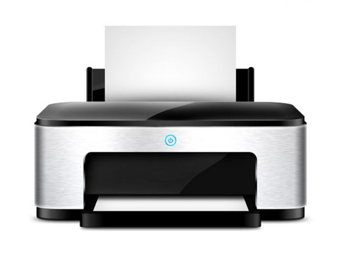
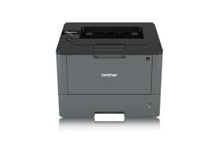
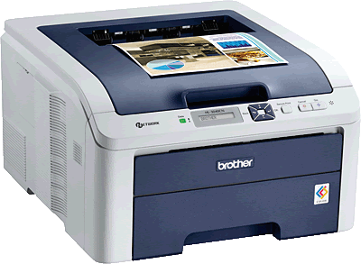
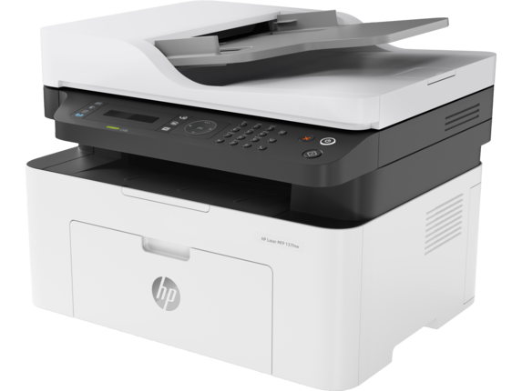
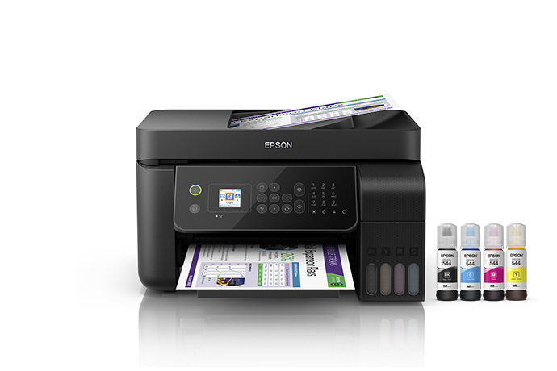
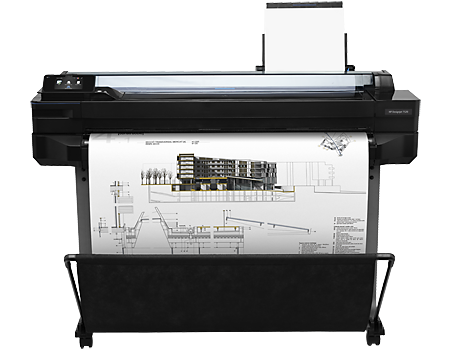
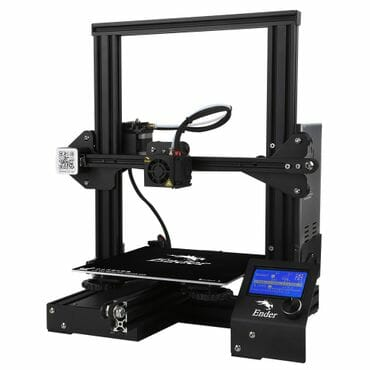

La impresora
Es el periférico que nos permite pasar a papel los documentos almacenados en el PC. Su evolución ha sido grande desde aquellos aparatos muy parecidos a máquinas de escribir que solo eran capaces de reproducir texto a baja velocidad a impresoras que pueden reproducir miles de páginas en solo minutos.
⠀
Estas eran algunas de las primeras impresoras:⠀
la imprenta.⠀
Impresora Matricial 1957.⠀
Primera mini impresora 1968.⠀
Impresora láser 1971.⠀
la inyección a tinta 1976.⠀
Tipos de Impresoras:⠀
Impresoras láser: Las impresoras láser se caracterizan por su elevada calidad de impresión, velocidad y una relación coste por página muy económica.⠀

⠀
Impresoras láser monocromo: Estos dispositivos láser solo pueden imprimir en un color, que por norma general suele ser el negro. Son muy rápidas y tienen un coste de impresión muy bajo.⠀
⠀
Impresoras láser a color: Con las impresoras láser a color podemos realizar copias de alta calidad en blanco y negro y también con colores nítidos y bien definidos.⠀
⠀
Impresoras láser multifunción: Auténticos centros de trabajo que nos permiten integrar una amplia variedad de tareas en un solo aparato. Las impresoras láser multifunción, además de imprimir, pueden incluir escáner, fotocopiadora, fax, lector de tarjetas SD, puertos USB y otros elementos para mejorar su conectividad, como el Bluetooth y el Wifi.⠀
⠀
Impresoras de inyección de tinta: Las impresoras inkjet o de inyección son habituales en hogares y pequeñas oficinas que generan una cantidad pequeña de documentos al mes. Las tintas son aplicadas directamente al papel con ayuda de unos inyectores, obteniendo un resultado de gran calidad con una inversión inicial muy económica.⠀
⠀
Plotters: Este tipo de máquinas ofrecen la posibilidad de imprimir trabajos a gran escala: gigantografías, cartelería, planos de gran tamaño… Se utilizan en estudios de arquitectura, publicidad, diseño e imprentas.⠀
⠀
Impresoras 3D: Los equipos 3D han revolucionado el concepto de impresión, ya que permiten imprimir todo tipo de objetos a partir de un diseño. Las aplicaciones son múltiples: desde el campo de la medicina, con la construcción de prótesis y otros elementos similares, a los sectores industriales que requieren piezas específicas para su funcionamiento.⠀
⠀